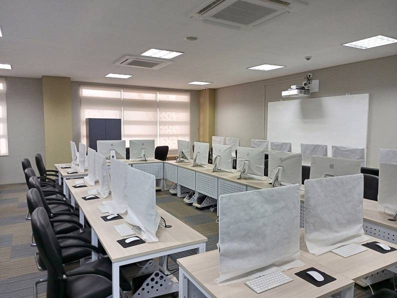
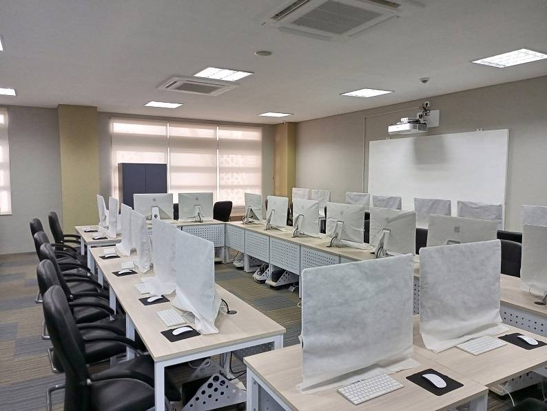

Laboratorium Terpadu adalah Laboratorium yang terdapat di UIN Raden Fatah Palembang yang dimana terdapat beberapa Laboratorium yang terdiri dari Laboratorium Kimia, Laboratorium Biologi, Laboratorium UTM dan Laboratorium Komputer


 
